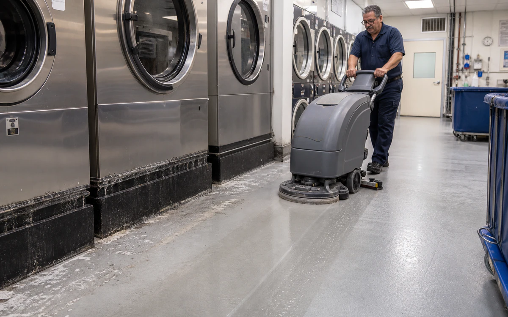
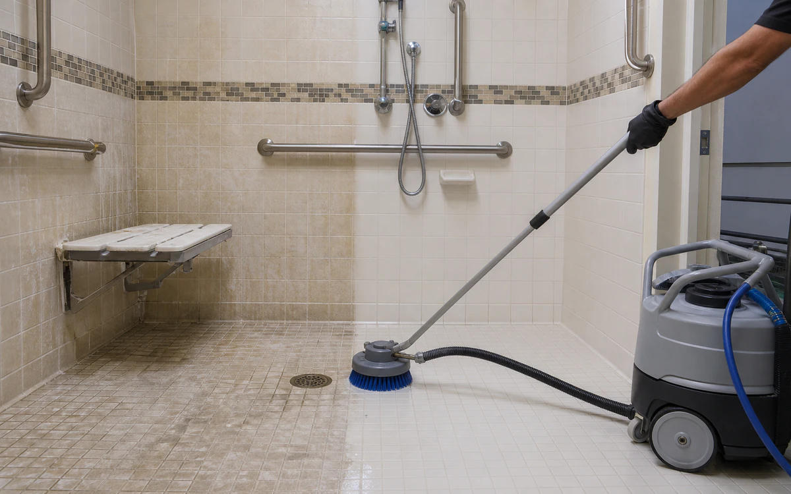

Industries › Healthcare & Senior Living
Clean resident-facing zones with lower odor, residue, and disruption.
Neutral and MultiWash handle everyday cleaning across mixed surfaces, Descaler removes scale, and Purgo tackles recurring odor.
- CleanKitchens, laundries, mechanical rooms, restroom fixtures, nonclinical floors, drains, carts, and isolated heat-transfer equipment
- RemoveCooking grease, laundry film, soap scum, hard-water scale, tracked soil, and drain residue
- Start withUse a low-odor cleaner, give it time to work, brush where needed, rinse fully, then follow the facility's normal disinfection step
- ProductsVertKleen Neutral, VertKleen MultiWash, VertKleen Descaler
- HMIS0-0-0 across every VertKleen product offered
- See products, first-test plan, and results
Cleaning chemistry for Healthcare & Senior Living.
Lower-odor cleaning makes the job easier on crews and helps rooms reopen sooner.
See VertKleen results

Recommended
VertKleen products for Healthcare & Senior Living.
Match the formula to the soil, surface, and cleaning process.
Where VertKleen fits
Remove grease, scale, and everyday grime from resident-facing areas and building equipment.
- Cleaning job
- Remove grease, scale, and everyday grime from resident-facing areas and building equipment.
- Equipment and surfaces
- Kitchens, laundries, mechanical rooms, restroom fixtures, nonclinical floors, drains, carts, and isolated heat-transfer equipment
- What needs to come off
- Cooking grease, laundry film, soap scum, hard-water scale, tracked soil, and drain residue
- Products to start with
- VertKleen Neutral, VertKleen MultiWash, VertKleen Descaler
- How to clean
- Use a low-odor cleaner, give it time to work, brush where needed, rinse fully, then follow the facility's normal disinfection step
- What to compare
- Finished result, crew time, product, water, passes, downtime, and repeat work.
Product files
Get the SDS, TDS, and product records your team needs.
Start with one job